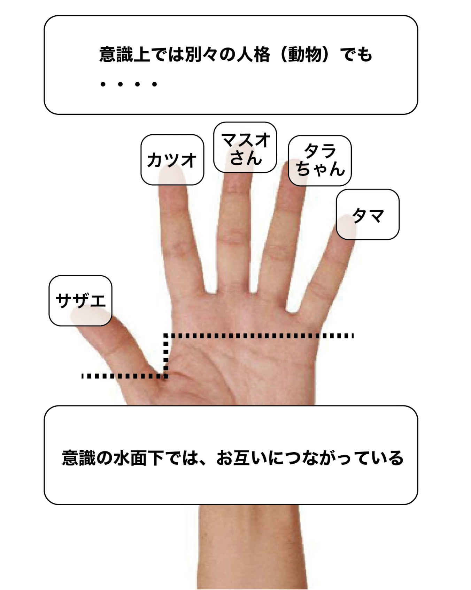

| あなたの「天才」が目覚め、人生が自動的に変わるたった2つの質問: 秘密は無意識の「声」にあった | |
| さわもとひでのぶ | |
| さわもとひでのぶ (2018) | |
関係者の声（個人情報を載せないという条件で、本人の許可を得て、掲載させていただきます）
・セッション後、一週間たってみると、私のモノへの意識が変わったことに気づいてます。自分の内面も、外側も整理したい方は是非、さわもとコーチのセッションを受けられることをおすすめします。（ＭＨさん 女性）
・セッション後、自分が「愛されキャラ」だと氣づいてから身の回りの現実が激変しました。今では全国を飛び回っています（ＯＭさん 女性）
・いつも最後の最後の方で、しっくりくる気付きが得られた。中には、セッションの次の日に、うおーって感じの気付きがあった時もありました。（ＵＴさん 男性）
・物に対する執着があったんだと、わかったからこそ物への執着が少し薄れたような気がします（ＩＹさん 女性）
・自分の可能性や考え方を広げてみたい方にお薦めです。（ＹＭさん 男性）
・さわもとさんが「いまの自分は●●していい」「理想の自分も●●していい」とおっしゃって下さった言葉を復唱したところ、まったく違和感がなく、セッション後は「これが私らしい生き方で使命だ！」と心からワクワクした気持ちになりました。２時間での自分の変容ぶりにビックリすると共にさわもとさんに心から感謝しています。（ＫＹさん 女性）
・自分のことがよくわかっていない人。なかなか行動できない人。思っていることや、考えていることと行動が矛盾している方。行動したことに対する成果が相対的に低い方に薦めたいです。（ＴＭさん 男性）
・アトピーじゃないけど、冬場はかゆみがひどいのですが、セッション後、氣がついたら、かゆみが消えていました（ＩＣさん 女性）
・セッション後は、最初のテーマはなくなってはいないのだが、その先に、別次元の目的があり最初のテーマとつながっていることがわかり、別次元の目的に向かって行動する気になりました。（ＹＫさん 男性）
・セッション中は、夢中になって話してしまいました。自身の深掘りもできたし、新しい自分を発見した感じがして楽しかったです。夢中になって答えていたら、あっという間で、最後の人生の目的のお話の時には、涙が溢れていました。また、お話してみたいです。皆さんにも、セッションぜひオススメしたいです。（ＯＹさん 女性）
こんにちは。さわもとひでのぶです。
私は、たった２つの質問を繰り返すだけで
相手の悩みや問題を解決するというコーチングをしています。
この本を読まれている方はすでに私の第一弾の電子書籍
「感捨のススメ」を読まれた方も多いかもしれません。
昨年の12 月に出版した電子書籍「感捨のススメ」は、
「家事・生活の知識」部門で新着ランキング１位を獲得、
また、常識・マナー、生活情報の２部門で
売れ筋ランキング１位になることができました（２０１８年４月時点）。
あらためてお礼を申し上げたいと思います m(_ _)m
※まだ、読まれていないけど興味のある方はこちらをどうぞ
「感捨」とは、感謝しながら捨てる（手放す）の造語です。
「断捨離」とは違う考え方を評価していただいたのかな、と考えております。
さて、本書はその第２弾・・・かというと、必ずしもそうではありません。
見出しを見てビックリされた方もいるかもしれませんが、私は発達障害を疑われたことがあります。実際のところはわかりません。一度専門医の診断を受けましたが、それ以降は逃げ出したからです。
自分自身がどんな人間なのか？に氣づかず、リストラ３回、転職も７回繰り返しました。
本書ではそこはテーマでないので、これ以上触れませんが、とにかく生きるこおとが息苦しかった。
そんな私があえて出版することができたのは、出版をサポートしてくれる人に出会えたこともありますが、自分の中に「書く」という強みを見つけることができたからです。
自分は人並みにコミュニケーションがとれない、社会人としては致命的です。人に誇れるような特別なスキルもない。だけど、文章を書くのはけっこう得意だったりする。しかも変わっているけど面白いし、わかりやすい。
これに氣づくことができました。
私たちはよほどのことがない限り、自分自身を過小評価する傾向があります。
話してみるとすごいものを持っているのに、
自分はダメだ
自分には才能（力）がない
他の人に比べたら自分なんて大したことない
と決めつけている人が多いんですね。
そこで、本書のテーマは、
自分の中の【天才】を見つけ、それによって人生が変わるためにどうしたらよいか？
について話を進めていこうと思っています。
本書を書くにあたって、カギとなるキーワードが２つあります。
それは「無意識」と「人生の目的」 です。
実は自分の中で才能や強みだと思っているものはそうでもないものが多々あります。
それは、単に 「お金が儲かりそうだから」「ニーズがあるから」といった周りを見ながら考えてしまう からです。
無意識上では（本当はやりたくない）のに意識でやろうとして
苦しくなりそして成果を出すことなく途中で挫折します。
では、なぜ無意識上で（本当はやりたくない）と思うのか？
それはあなたにとっての【人生の目的】とつながっていないから
です。
ですから、本来の自分と一致して、人生の目的につながれば
それは何の問題もなくスルスルッと進むことができます。
私のクライアントさん的に言えば、
「外から押し出されるように動く」 ことができます。
それでは、あなたもぜひ本書を読みつつ、ご自分の「天才」が目を覚ますたびに出かけるとしましょう。
※本書の最後にあなたのお宝を見つけるための【特典】をつけました。
ぜひ最後までお付き合いくださいませ (^-^)
２０１８年12 月吉日 さわもとひでのぶ
あなたは疑問に思ったことはありませんか？
同じような家庭環境、同じような能力のはずなのに
何か新しいことをはじめたときに、スイスイとうまくいく人と
なかなか成果が出ない人に分かれることがありますよね。
あなたの周りにも人生がうまくいっているなぁ～と思える人とそうでない人がいると思うんです。
それって何が違うんだろう？と、考えたことはないでしょうか？
家庭環境でも能力でもないとしたら、
やっぱり運なのかな？
そう思われるかもしれません。
確かに運もあるでしょうが、もう一つあまり知られていない要素があります。
本当の意味で人生がうまくいっている人は、ありのままの「現実」にＯＫを出している んですよね。
具体的に言うと、
良いこと（ポジティブ）はＯＫ。だけど、良くないこと（ネガティブ）もＯＫ、
つまりどちらも同じＯＫ、ということです。
別の言い方をすれば、とてもうまくいっている人ほど、ポジティブだけでなくネガティブな部分もきちんと受け入れています。
会社の倒産や借金、病気、パートナーや子どもとの家庭トラブル...
ネガティブを受け入れることにより未来が開け、それによって現実が変わっていく・・・
人生がうまくいきはじめた人はおおむねこのような共通点があります。
ポジティブを受け入れることは誰でもできます。
ですが、ネガティブもちゃんと受け入れられる人というのはあまりいません。
ネガティブを受け入れることの大切さを知っていても、実は逃げている人が多いのです。
このポジティブとネガティブを両方とも受け入れることによって、自分の中でポジティブとネガティブが実は一緒のものだったと氣づきます。
それは、自分のレベルが一つ上がたことのサイン。
そうすると、 ネガティブは嫌うものではなく、むしろ必要だった んだと
氣づくことができます。
この「ネガティブが必要だった」という感覚にたどり着けると、あなたの人生が好転するカギになります。
ノーベル物理学賞を受賞した、かの有名なアインシュタインはこんな名言を残しています。
「いかなる問題も、それをつくりだした同じ意識で解決することはできない」
これを言い換えれば、 問題を解決するためには自分の意識のレベルを上げなければいけない ということです。
あなたの中にも「やりたい」けど「できない」というのがあると思います。
私のように「電子書籍を出したい」けど、「何を書いたら良いかわからない」という方もいらっしゃるかもしれませんよね。
この「やりたい」という願望と、「できない」という現実の間の葛藤に挟まれて、
人は苦しんだり悩んだりするんですよね。
外から見たら、やりたかったらやればいいのにやらないから✖
できないから ✖
この、両方とも ✖の状態を専門用語で「ダブルバインド（二重拘束）」といいます。
人はこの「ダブルバインド」に挟まれて身動きがとれなくなっているので苦しさを感じてしまうのです。
特に、その「やりたい」ということが大きければ大きいほど、反面の「できない」現実のギャップが大きくなるわけです。
では、自分の意識のレベルを上げるためにはどうしたらよいのか？
それが先に述べた、 ポジティブとネガティブの統合 です。
ポジティブとネガティブの両方を受け入れて、
それらが統合されると、自分の意識の「ステージ」が
１つ上がります。
それは階段を一歩登るのと、似ています。
階段を一歩登ってふと後ろを振り向くと
（な～んだ、自分はこんなことで悩んでいたのか）と思うそんな感じです。
私たちは今までにそんな人生をたくさん経験しています。
それまで乗れなかった自転車がある日突然乗れるようになった
それまで分からなかった数学の問題がある日突然分かるようになった
それまで理解できなかった彼女の気持ちがある日突然理解できるようになった・・・
これらの共通点は、自転車や数学、相手への「願望」に対して、現状「わからない、できない」という現実を受け入れたことによって起こります。
正確には「わからない、できない」現実を受け入れると、それまでできなかった本当の理由が見えてきます。
そうすることで、自分が悪いわけではなく、あえてそんな自分を選んでいたんだと氣づくことができるようになります。
「あなたは、自分でこの『現実』を選んでいるんだよ」
と言われたらどう感じますか？
「そんなことない！私は好きでこんな人生を選んでない！！」
と反論したくなるかもしれません。少なくても私はそうでした。
恥ずかしい話ですが、私はリストラを３回、転職を７回繰り返しました。
最初の就職は営業でしたが、まったくダメダメで
入社後たった１か月で逃げるように退職。
そこからは職を転々としたんですよね。
うまくいっている人たちに嫉妬し、社会を恨んだこともあります。
誤解を恐れずに言うと、人生がうまくいかなくて事件を起こしてしまう人の
氣持ちは理解できます。
（もちろん、氣持ちを理解できるからと言って事件を起こしてもいいとは言っていません）
私だって、３回目のリストラ勧告で「今月で終了します」と言われた際は、
「またかよ！何でオレばっかり...」という思いでいっぱいでした。
一歩間違えれば、社会に復讐しようと事件を起こしていたかもしれません (^-^;
でも、自分が「人は自らこの現実を選んでいる」を実感として腑に落ちたとき、
なぜ、自分の人生がうまくいかないのかを理解することができるようになりました。
例えば、仕事。
好きで今の会社にいるわけじゃない
本当は第一志望のもっといいところに入りたかった！と思うかもしれません。
だったら、そこに入るまであきらめずに就職活動をしたり
アルバイトで入るという選択肢もあったはず。
でもそうしなかったということは、
やっぱり自ら今の会社を選んだことに間違いない
この「今の現実は自ら望んで作っている」ということが深いレベルで腑に落ちることで、より深い自分とつながることができるようになります。
私もリストラを３回も経験した人生をあえて自分で選んでいたことがわかることで、
自分が必要としていたものや今後自分が何をしたらよいのか？が見えてくるようになりました。
自分の人生も捨てたもんじゃない、と。
もちろん、経験なんてするものじゃないですけどね (^-^;
「マインドフルネス」という言葉がかなり浸透するようになりました。
感情をコントロールするという意味で使われたりもしますが、
本来の定義は「今この瞬間の自分を見つめる」という意味です。
ポジティブな自分だけでなく、ネガティブな自分もありのままに
今のこの瞬間の自分を見つめるということですね。
ですが、「マインドフルネス」が一種のブームになる以前から、日本には坐禅や瞑想を始めとしてヨガ、内省、内観など自分を見つめる方法が伝わってきました。
ところが、自分を見つめる大切さを知っていながらこれがなかなか難しい...
という声も聞きます。
「知っている」と「できる」との間には大きな差があるんですよね。
ネガティブを受け入れることを理屈では分かっていても、雑念だらけの自分を感情的に受け入れることができません。
だって、ネガティブを受け入れるって正直ツラくないですか (^-^;
だから、無意識に目を背けて逃げてしまうんです。
そして、「自分自身を見つめたい」と思いながらも、「ネガティブはイヤ」
と逃げることでその葛藤の間でいったりきたりしてしまう。
実は、マインドフルネスや瞑想がうまくいくのは、ポジティブとネガティブが統合されて、自分の次元（レベル）が上がった結果なのです。
じゃあ、統合するためには、どうしたら良いのでしょうか？
一氣にうまくいかせようとせずに、ちょっとずつ少しずつネガティブを受け入れていけばいい。
人生が変わった人の話を聞くと一晩で一気に変わったようなイメージがありますが、
誰でもそうなるわけではありません。
コツコツと自分ができることを積み上げていった結果、ある日を境にドカ～ン！とブレイクする、という方もいます。
後述するセルフセッションも、どちらかというとこの「コツコツ・ドカ～ン！」がくるのを目的に繰り返し繰り返しやっていく。
こう考えれば、いかがでしょうか？
どんなに大食いの人でも、１ホールのケーキを一口で食べることはできません。
１口ずつ口に入れる、それを繰り返すのです。
私が感捨コーチングを始めてから、実際に受けていただいた
クライアントの方全員に共通していることがありました。
それは、
片づけや整理ができないというのはいわば表面上の話にすぎなくて、
その奥にもっと深い問題や解決したい課題がある
というものです。
例えば、あるクライアントは最初片付けができないと言ってましたが、
実は家族関係に悩んでいることが分かりました。
なので、それを中心にセッションを行った結果、自分の「ステージ」が上がって悩みに対するストレスがなくなりました。
しかも、頼んでもいないのに、家族が家の掃除をしてくれるというおまけつき
(^-^;
自分自身をパズルに例えたらわかりやすいかなと思います。
身体全体がパズルのピースでできており、あともう１つで完成・・・
ところがこの最後のピースがうまくハマらない・・・
自分が抱えている問題や課題は一体何なのか？
実は、これが明確になっていないで悩んでいる人は多いのです。
逆に言えば、課題がバチッとハマれば、問題はほぼほぼ解決したも同然です。
私のメンターも
「セッションの課題がきちんと決まれば８割解決」とさえ言っています。
なので、この課題だしの時には１時間もかかるときがあるそうです。
ですが、この時間がとても大切。
ここでクライアントの中でしっかりハマる課題を出すことができれば、
あとは自動運転のようにスイスイと目的地（自分が本当にほしいもの）を見つけることができます。
さて、カンタンに「無意識」と言ってますが、そもそも「無意識」って何なのでしょうか？
「意識じゃないから無意識なんだよ」と言われても
いまいち、納得できませんよね (^-^;
私も色々調べたけど、自分が納得できるものがなかったのですが、
ようやく一番わかりやすいものを見つけました。
かつてＡＢＣマートを立ち上げ、現在新宿駅近くに
図書館カフェＨＡＢＩ∞ＲＯＡＤを運営されている平井克也さんという方がいます。
その平井さんの著書「成功する人は、なぜ宇宙を語るのか。」によると、
いわゆる意識というのは全部で４つの階層に分かれるそうです。
① 顕在意識：自分（エゴ）を存続させる
あまり賢くもなくて非力。自分を存続させるための意識
② 潜在意識：呼吸、消化、排泄などの生命活動を継続させる
生命の継続・安定・安全に関わる大切な仕事を担い、生命活動を継続する。
トラウマ（心的外傷）、コンプレックス（劣等感）、メンタルブロックなど負のエネルギーがたまりやすい
③ 集合無意識：肉体は別々でも実は１つにつながっている無意識
誰かのことを考えているとその人から連絡が来たり（シンクロニシティ）、
自分以外の誰かのために、という想いが強いとそれが集合無意識につながり、人との出会いやお誘い、お金などの思わぬ助けが得られる
④ 超意識：意識の奥深くに存在する、いわゆる「神」
私たちが言う「神」と同じ。
願いが叶うとか、いわゆる「引き寄せ」というのは、この④超意識と①顕在意識がつながった瞬間のことを言います。
①は３～５パーセントに対して②～④が95 ～97 パーセント
氷山に例えれば、３～５パーセントの顕在意識という一角が水面上に出て私たちの意識をコントロールしようとしています。
そして、私たちはついつい、95 ～97 パーセントの力を使わずに、３～５パーセントの水面上に見える顕在意識だけで何とかしようとしてしまうんですよね。
これがいかにもったいないことかは自ずと理解できるか、と思います。
さて、人間には４つの意識があることが分かったと思います。
ここでは、よりイメージがしやすいように、手のひらを使って、「サザエさん」の磯野家（どちらかといえば、フグ田家ですが・・・）に例えて説明してみましょう。
※あくまでイメージしやすいようにと便宜上の説明ですので
その点、ご理解ください。
指の一本一本がそれぞれのメンバーです。指が５本しかないので、５人（正確には４人と一匹ですが）本来はもっと多くの人がいわゆる一本一本として世界には存在しています。
さて、彼らはまったく別々のキャラクターではありますが、指をたどっていくとどうなるでしょうか？
そう、つながるんですよね。
私たちも同じ。私（さわもと）も、これを読んでいるあなたも、表面上は一本一本の指ですから、一見するとまったくの別人です。ですが、内面を掘り下げると実は水面下でつながっている。このつながっている部分が無意識に当たる、と考えるとわかりやすいのではないかと思います。
カール・ユングという心理学者は
「人間は無意識上でつながっている」と提唱しています。
この無意識は、自分の本来の意識、超意識に近づくごとに他人と、いや人間だけでなく動物や植物ともつながるようになります。
これは私が言うまでもありませんが、過去のことや将来のことなどに氣をとられて、 私たちはいかに「今この瞬間」を生きていないのか、ついつい自分を見失ってしまうことでしょうか。
例えば、あなたは収入が足りなくてこの先の将来に不安を抱えているとします。
ところが、「今この瞬間」を意識していれば、あなたは生きている。
今こうして生きていることが分かればお金の不安は消えます。
もちろん、お金の問題そのものが消えたわけではないし、
現実逃避をしようというわけでもありません。
逆ですよね。
「今」に意識が向けば、現実に目を向けられるようになるんです
とはいっても、理屈だけだと「口で言うのは簡単だけどね～」
で終わってしまいますよね (^-^;
私もあなたの立場ならそう思います。なので、どうしたらよいかをお話ししましょう。
それは、
自分を理解してくれる人が誰かもう一人いること。
私はコーチングをやっているので、
実際に私のコーチングセッションを受けてください
そうすればわかりますよ
と言いたいところですが（笑）
やってみないとわからないものに人は安易に足を踏み入れませんよね。
なので、まずは「今」のあなたを認めてくれる人が誰かいないか、探してみてください。
そんな人が一人いれば、あなたは「今」の瞬間を安心して目を向けることができるようになります。
今この瞬間に意識を向けることが理解できると、
まるでズレていたカメラのピントが合うように、
ズレていた身体の中心や軸を感じることができます。
そのとき、自分が本当は何を望んでいるのか？
答えがはっきりして視界が広がるでしょう。
そして、それが分かったときの感動はプライスレスです。
意識の皮が１枚むけるごとに、１歩ずつ本来の自分に近づく
第一章で、ポジティブとネガティブが統合されると自分の意識の次元（レベル）が
上がる というお話をさせていただきました。
レベルが上がるというのは、この玉ねぎの皮が１枚ずつ
ペリペリとはがれていく、そんなイメージです。
本来の自分（超意識）を覆っていた皮を１枚ずつ
剥いていくそんなイメージです。
そのために必要なことは何か？
それは 自分自身と向き合うこと です。
（な～んだ、そんなことならわかってるよ）
そんな声がちらほらと聞こえてきそうです ( 笑 )
ですが、私たちは自分のことを一番知っているようで
実は知らないことばかりです。
なぜなら、先にお話しした通り、 私たちの表面に出ている意識はたった５パーセント。
人は自分の姿を見れませんからね。
「自分と向き合えている」人は、やりたいことと、それができないことに対する間にいて、悩むことがあります。
とくに、できない自分に向き合うのはツライですよね。
それがイヤな人はポジティブに行こうとする。
でも、いまいちポジティブには行ききれない。
そして、ネガティブにも行きたくない
結局どっちにも行けないから苦しい
これを専門的には「ダブルバインド」と言います。
このとき、人は葛藤に悩みます。
でも、葛藤があるのは自分のレベルを上げるためのメッセージです。
自分のレベルを上げて自分のミッションに近づきなさいという
超意識からのメッセージです。
ほとんどの人は現状に不満を抱えながら
うまくいかないのを他人のせいにして終わりです。
ですが、本書を手に取ったあなたは
とても意識が高い方だと思います。
ぜひ、その他大勢の人とは違って
本来の自分とつながってほしいと思います。
さあ、本書も佳境に入ってきました。
この章では私の人生が急変するきっかけとなった、
ある「奇跡のコーチング」のお話をしたいと思います。
これに出会ったおかげで私は自分の強みの一部に氣づき、
Ａｍａｚｏｎで電子書籍を出版してランキング１位を獲得できた、
といっても過言ではありません。
とはいえ、恥ずかしながら正直な話、私は「コーチング」なるものを
受けたこともどんなものかも知りませんでした。
むしろ、名古屋で有名な名古屋コーチンの仲間とさえ思っていたぐらいです（笑）。
アメリカのアンソニー・ロビンズという人物が
コーチングでは世界的に有名ということすら知りませんでした。
詳細は割愛しますが、ひょんなことから、そんな「奇跡のコーチング」を受けることになりました。
このコーチング手法を確立した人は、
一見フツーのお腹がでっぷりと出たオジサンです。
まさかこんなオジサンが自分のメンターになろうとは思いもしませんでした (^-^;
たった２つのシンプルな質問しかされない のに、
何かどんどん深遠な世界に引き込まれたように感じました。
目元には涙さえ浮かんでいました。
セッションが終わったとき、
それまで自分は自分のことをよく知りませんでした。
実は人生がうまくいっている人ほど、自分のことをよく知っています。
「自分を知る」「知っている」というのは、ずっとずっと奥の方まで
自分自身が内面まで掘れている、という意味です。
この自分自身を掘って掘って掘り続けていくと、
自分がいったい何者なのか？にぶち当たります。
それを一般的には人生のミッションと言う人もいますね。
自分は何のために生きているのか？
簡単な質問ですが、これは頭で考えても出てきません。
考えて出てくる答えは浅いのです。
ところが、自分を掘って掘って掘りまくることで、
少しずつ少しずつそれまでとは違う景色が見えてきます。
その中から出てくる答えは意外とシンプルで、言葉だけにすると
そんなに立派な言葉ではないかもしれません。
でも、その人自身が誰に言われることなく氣づくことができれば、
それはその人にしかないオリジナルなもの。
それに氣づくことができれば、その人自身の中で深い感動を得ることができます。
先にお話した「超意識」に向かって私たちは少しずつ本当の自分を知ってい く、ということ ですね。
第２章でもお話ししましたが、私たちはビックリするぐらい「今」「この瞬間」を意識して生きていません。
気が付くと、過去の失敗にクヨクヨしたり
明日の仕事どうしようと悩んだり・・・
私たちの脳は１日６０，０００回以上の物事を考えている、と言われています。
そのうちの90 パーセント以上は実は前と同じこと。
つまりはほとんど同じことを考え続けているうちに時間が過ぎていく・・・
これってもったいない、と思いませんか？
「今」「この瞬間」の感覚をつかみ、自分自身の内面に気づくと、本人でも氣づかないうちに自分の中の意識と無意識がつながりはじめます。
自分の中の意識と無意識がつながると、自分の感情に変化が訪れます。
クライアントさんの中には、ただ傾聴するだけで、涙があふれて止まらない・・・そんな方もいます。
それは言葉にしてみると大したことなかったりするんですよね。
自分を認める
自分を愛する
演技しない
流れに身を任せる
・・・
傍から聞いてみると
「何それ？」と思いませんか？
でも、同じ言葉でも、本人の中では、深い感覚レベルでその言葉につながることで深い感動に入ることができます。
それに氣づくことがあなたの現実が変わる第一歩です。
さあ、自分の内面が変われば次に変わるのは何か？
それは行動です。
とはいっても、ここで問題が発生します。
行動しなければ何も変わらないとわかっている、
ですが、行動することはコワい・・・
そう思うことってありませんか？
傍から見れば、「やってみればいいじゃん」と思えることでも、
当の本人からすればとても壁が高くてしり込みしてしまう・・・
もし、あなたもそんなタイプなら、そんなあなたでも行動が変わるキーワードがあります。
行動が変わるためのキーワード、それは「どちらでも良い」です。
欲しいものがあるのにそれが手に入らない、
こんなときに葛藤が生じる、というお話をしましたよね。
でも、結果的に手に入ろうが入るまいがどちらでも良い
この心境になると、不思議と欲しいものが向こうからやってきます。
いわゆるニュートラルな状態です。
それまで全然自分の商品やサービスが売れなかった人が
はじめて売れた（買ってもらった、契約してもらった）ときには
共通点があります。
それはこのニュートラルな状態だった、ということ。
目の前の人が買ってくれようがくれまいが
「どちらでも良い」からとにかくベストを尽くそう、と。
それまでさんざん失敗を繰り返してうまくいかない経験をたくさん積んだ人ほど
この心境になりやすくなります。
「失敗は成功のもと」という言葉がありますが、
実は、失敗も成功もどちらも同じものです。
うまくいったときにこれを実感することができます。
成功は、うまくいったというデータ。
でも、 失敗も「うまくいくためのデータ」 です。
だからどちらにしても、結果的にうまくいきます。
ただし、それがあなたが本当に欲しいモノであれば、という前提がありますが・・・
玉ねぎの芯の部分（超意識）から発せられる本来のあなたの波動に人は反応します。
これは決してスピリチュアルな話ではありません。物理学の話です。
ベストセラーになった「こうして思考は現実となる」
の著者 パム・グラウト氏によると、
アインシュタインが発見した特殊相対性理論の
有名な公式 E=mc2 は
物質とエネルギーは実は同じものであることを証明した
と述べています。
エネルギーは解放された物質のことで
物質は解放されるのを待っているエネルギー
である、と。
今までは、不協和音が続いていた楽器のようなもの。
それが、集合無意識→超意識とつながることによって
本来の音を奏でる楽器に変わるわけです。
その音色に周りの人は反応し、共鳴するようになると自分に引き寄せられるように自分に必要な人が現れます。
いわゆる「引き寄せの法則」というのがありますが、
もしあなたが欲しいものを引き寄せられないと悩んでいるとしたら、
それは、欲しいものを引き寄せられないのではありません。
今の自分のレベルに合ったものを望んで引き寄せている
と考えることができます。
アンソニー・ロビンズをはじめ、ブライアン・トレーシー、ロバート・アレン、マーク・ビクター・ハンセンなど、アメリカが誇るきら星のごとき成功哲学家たち。彼らに影響を与えたのが、ジム・ローンという人物です。
アメリカの起業家で講演家であり、自己啓発の分野でも非常に有名な作家でもあるローン氏は、こんな名言を残しています。
あなたは自分の身の回りにいる５人の平均である。
要は、自分と似た者同士が引き寄せ合うという意味ですが、
それも実は自ら選んでそのような人たちを付き合っている
そう考えることができるわけです。
私は月に何百万円と稼ぐ人たちの集まりに行くことがあります。
彼らからすれば、なんでもないことで、「上には上がいる」というのですが、
それでもけっこうすごいですよね (^-^;
でも、実際行ってみるとどうか？というと、すぐ帰りたくなるかもしれません。
だって、 居心地がめっちゃ悪い から。
自分が稼いでいないなんてカッコ悪くて言いづらい。
だから、自分と同じような人たちと集まって（居心地が良い）と笑っている。
そんなものなんです。
でも、それが悪いわけではありません。
成功しているビジネスマンは常に成長し続けるために
「現状維持は退化の始まり」と自分を戒めています。
本当に現状を抜け出したいと思ったら、がむしゃらに動くようになります。
尻に火がついているので、動かざるを得ないんですよね (^-^;
さて、ここからは具体的な方法についてお話ししていきます。
これから私がお話しすることが私自身が実践していることばかりです。
もちろん、あなたに合うかどうかはわかりませんが、言わんとする感覚だけつかんでいただければと思います。
あなたが自分の無意識に氣づく４つの条件は以下の通りです。
① うまくいかなかった結果から振り返る
② 真夜中の声に耳をすませる
③ 「たら」「れば」の法則
④ あなたよりもあなたを理解できるコーチをつける
「結果第一」というと、営業やプロスポーツ、政治の世界でよく聞く言葉ですが、実はその他の受付や事務のお仕事をしている人も同じです。
「結果よりも一生けん命がんばることが大切」という意見もあるでしょうが、その仕事で対価を得ているなら、「一生けん命がんばればいい」ではこれからの時代、ＡＩにとって代わられてしまいます。
それに、やったらやった分だけもしくはそれ以上の結果がほしいと思いますよね。
一生けん命やったけどうまくいかなかった・・・
こんな経験は誰にでもあると思います。
ですが、結果はありのままの自分を見せてくれます。
30 パーセントガンバった人には30 パーセント（プラスアルファ）の結果、
70 パーセントガンバった人には70 パーセント（プラスアルファ）の結果、
１００パーセントガンバった人には１００パーセント（プラスアルファ）の結果、
ときには残酷で、見たくないものもあると思います。
でも、逆説的ですが、そのときの自分は１００パーセント力を尽くしたと考えているんですよね。
だから、後になってみないとそのときの自分を客観的に冷静に見ることはできません。
そして、後になって振り返ってみたとき、そのときの自分の「あり方」がどうだったか分かります。
そのときの自分の「あり方」が分かると、それを変えなければ、また同じ結果になってしまうことに氣づくはずです。
私は、以前某国家資格を取得するために独学で勉強していました。
とはいっても、勉強を始めたのが３か月前で、土日に地元の図書館で１～２時間やるだけ。
そのときの自分はある速読法を身に付けていたので、自分の中では自信がありましたが、結果は不合格。
合格発表当日には、合格者の掲示を地元の公民館まで見に行きましたが、自分の名前がなかったのでその落差にしばらく落ち込みました。
ですが、受けてみて不合格になってみて、氣づいたこと。
（あ、やっぱりダメだったか・・・）
「やっぱり」という言葉が出てきたのは我ながらビックリでした。
実は試験前も試験中も試験後も当時の自分は不安でいっぱいだったんですよね。
そこに向き合うことができたため、翌年はきちんと時間をとり、スクールに通って勉強し、ぶっちぎりで合格。リベンジを果たしました。
（最初からそうすればよかったのに...）と思われる方もいるでしょうが、
当時の自分は実際に不合格を経験することで落ち込むことが必要だったんですよね。
求める結果を得るまでに１年余計にかかりましたが、今になってそのときの経験は自分の財産になっています。
「草木も眠る丑三つ時」という言葉がありますよね。
文字通り、人だけでなく草木までもが眠り静まりかえった夜のことで、具体的には午前二時から二時半頃あたり。お化けや幽霊が出やすい時刻といわれている。
正直、私は不安で眠れなくなることがあります。
しかも、ちょうどこの時間帯に目が覚めるんですよね (^-^;
そういえばですが、とても大活躍している某ビジネスマンでも、１年間のうちぐっすり眠れるのは10 日ぐらいと言っています。
ネガティブな面が自分の中で強く出ているときは、布団に入っていてもなかなか寝付けないんですよね。
ネガティブなことがあって眠れない時は、（それに向き合ってみて）という無意識のメッセージです。
こんなときは羊を何百匹数えても寝付けません。
（って今どきこの方法を知っている人はいないかもしれませんが ( 笑 ) ）
ではどうしたらよいか？
布団の中に入って、それを徹底的に味わってほしいのです。
それはまるで、酸素ボンベもシュノーケルもなく、海水中にもぐっているイメージです。
苦しい、苦しいともがいて海水面上に上がろうとするだけなかなか上がらない・・・
（ヤバい、このままだと死んでしまう・・・）
最初はバタバタもがきますが、そのうち疲れてきます。
それはあきらめに似た境地かもしれません。
そのときがチャンスです
その奥にある世界にまで進んでほしいのです。
苦しい、苦しいともがいていた、その奥にあなたが求めていた世界があります。
そこに進むことであなたのレベルは１つ上がります。
その時になってあなたはそれまで悩んでいたことが大したことなかったことに氣づくでしょう。
問題や悩みが１００パーセントなくなるとは限りませんが、以前よりも大したことないと思えるようになるとあなたの行動は変わります。
ちなみにですが、大事な仕事や車の運転中など、ここで眠くなってはまずいというときは、きちんと仮眠をとりましょう。トイレの個室に10 分いるだけでも違いますよ ( 笑 )
「ゲームセットの後で『たら、れば』を言いだしたらキリがねぇよな」
あだち充さんの漫画「Ｈ２」で主人公がつぶやくセリフです。
確かに過ぎたことについて言いだしたらキリがないですが、
未来については、可能性を広げるために私はこの「たら、れば」を使います。
あなたができないと思っていることって何ですか？
自分の内面を探っていくと「できない」ことのオンパレードですよね (^-^;
「やればできる」と思っていても、その反面
（いや、やっぱりできない）という反対の意識が自分をコントロールしてしまいます。
実は私自身、本書の原稿はまさにそれでした。
２月から着手していたのに氣がつけば７月 (^-^;
自分の中で色々と言いわけしていたんですよね。
時間がないから
疲れているから
何か、家では氣分が乗らないから・・・
まさに、言いわけのオンパレードです (^-^;
さて、どうしたらそんな言いわけのオンパレードを脱することができるのか？
そのカギとなるのが「たら、れば」の法則です。
「たら、れば」の法則とは、
できない理由に「たら」「れば」をくっつける、ただそれだけです。
この「たら、れば」の法則を使用するうえで大切なことは、
言いわけを否定しないこと。
時間がない
疲れている
何か、家では氣分が乗らない
だったら、そっくりそれをそのまま受け入れてみる。
「時間がなくても、できるとしたら 」
「疲れていても、できるとしたら 」
「何か、家では氣分が乗らなくても、できるとしたら 」
と自分に問いかけてみるのです。
そうすると、時間があるときにカフェに行ってやってみるか
たった一文字でもいいから進めてみようか
夜が無理なら朝やってみようか
とか、色々打てる手があることが分かります。
しかも無理がない形で (^-^)
ついつい自分に言いわけをしてしまいがちな人、
ぜひこの「たら、れば」の法則を使ってみてください。
手前味噌ですが意外と使えますよ (^-^;
さて、①～③まではあなたが自分一人でもできることをお話ししてきました。
ところが、それでも・・・という方もいるかもしれません。
そんな方はぜひコーチングセッションを受けていただくことをオススメします。
コーチングって何？という方もいますが、元は馬を引く馬車の手綱を引くことを言います。
これが転じて、人を指導したり、求める目標に向かってし
アメリカでは全米ナンバー１のアンソニー・ロビンズが有名ですが、
コーチングは必ずしも人を叱咤激励して
私は無神論、無宗教ですが、これは私のメンターから聞いた言葉です。
「天 国」は二人 の国と書く、つまり一人では行けない。
また、四国の88 か所の札所を巡るお遍路さんでも
「同行二人」 という言葉があります。
お遍路さんは一人ではない、お大師さん（弘法大師）がいつも一緒にいる、
という意味ですね。
肝試しも一人ではいけなくても、二人なら行けますよね。
自分の問題や悩みって肝試しと同じようなモノ。
自分が抱えるネガティブの先を見ないとその問題の奥にある
本当に大切なものは見えない
でも、ネガティブの中を進むのって怖いんですよね。
だって今まで自分が見たことのない、行ったことのない世界だから。
だから、無意識にポジティブの方に逃げたくなってしまう。
そんな、 あなたのちょっと後ろからくっついていって
あなたが行きたい方向へ一緒についてきてくれる、そんな存在がコーチの役目です。
ちなみに、個人的にはコーチとは漫画「ジョジョの奇妙な冒険」漫画で登場する、
超能力が視覚化された「スタンド」みたいな存在と思っているのですが・・・
この章では、実際人生を変えた人に、どんな共通点があるかをお話ししていきます。
「人生を変えたい」という人は（私も含めて）たくさんいますが、
実際に変わる人はどんな「あり方」なのか？を伝えている本は少ないなぁ～
と感じています。
それでは、どんな共通点があるのか？順番にお話ししていきましょう。
① あなたの目の前にある現実は、すべて自分で選んでいたことに氣づく
② 他人のせいにしない
③ 先に応援する、だから応援される
④ 結果ではなく行動の目標にフォーカスする
⑤ 【本当に】大切なものをと感覚的につかんでいる
これは、第１章でも触れたことのおさらいです。
お金を稼ぐことができない自分
人生がうまくいっていない自分
理想のパートナーにめぐり会えない自分...
実は、あなたの周りにある現実は
あなたご自身が本心から望んでいたことだった
このことに氣づく必要があります。
そして、そのことに氣づくことによって、
お金を稼いではいけなかった
人生がうまくいってはいけなかった
理想のパートナーに出会ってはいけなかった
つまり、 ネガティブでなければならなかったことが分かってしまいます 。
そして、その理由がわかってしまうと、悩みに対するストレスはなくなるか、
もしくは小さくなってしまいます。
問題自体がなくなるわけではありません。
しかし、自分がなぜその問題を抱えているのかその本質が分かります
だって自分が好きで選んでいたから。
言葉や理屈で納得しようとしても難しいでしょう。
それは思考レベルでの納得だから。
それが腑に落ちれば、自分の意識と無意識とがつながって
その苦しみを抜けることができます。
「もとこちら そのままぜんぶ あたりまえ ただありがたく すいません」
これは、「もとはこちら」という本の著者、平井謙次さんの言葉です。
また、株式会社ビジネスバンクグループの創業者で、なおかつ経営コンサルタントでもある浜口隆則さんは
「雪が降っても自分の責任」とまで言いました (^-^;
つまり、自分の周りのあるすべてのことに対して責任を持つということ。
たとえそれが、自分のコントロールの範疇（はんちゅう）になかったとしても、です。
ところが、言葉ではわかっていてもこれがなかなかできないもので (^-^;
当たり前の話ですが、あなたの周りをよく見まわしてみてください。
一日の内、半分以上の確率で●●さんが悪い ■■さんが・・・
という言葉を耳にするはずです。
会話の中で主語が「●●さんが・・・」で始まることが多い人は
ほぼ間違いなく問題が起きると他人のせいにします。
なぜなら、自分が弱いから、傷つきたくないから。
責任を相手に転嫁することで、自分の身を守っているんです。
別にそれを否定するつもりはありませんが、
逆に このような人は１００パーセント信頼されることはありません。
だって、何かあったときに自分で責任をとろうとしない人を
誰が信頼するでしょうか？
そして悲しいかな、本人はそのことに氣づいてはいません。
そしてそのことを指摘してくれる人もいないのでしょう。
それも仕方ありません。
だってその人があえてそのような人生を選んでいるのだから。
たとえ、どんなに空しかったり、淋しかったりしても
結局その人はそんな人生が好きなんです。これは間違いありません。
ただし、「信頼されたい」けど「信頼されない」という葛藤に悩む人が自己一致して統合すると、上の次元に上がることで変わっていくんですが。
それも、本人がそれを本氣で臨むかどうかにもよりますよね。
私と数少ない ( 笑 ) 仲の良い友人の中に、 Ａ さんという女性がいます。
彼女の行動はヤバすぎるぐらいすごいです (^-^;
何がって、フェイスブックでの彼女の投稿は、他人の応援投稿でビッシリ。
しかも、自分の投稿には私をタグ付けしてくれるのでいやでも認知されます (^-^;
こちらはまったく頼んだわけでもないのに、積極的に応援してくれるんですよね。
この「先に応援する」というのが実はミソでして、
【人は応援すると逆に応援される】
これはいわゆる宇宙の法則でもあるらしいですね。
なぜかというと、 宇宙には真空がないから。
どういうことかというと、たとえばＡさんがＢさんを応援をするとき、
ＡさんからＢさんへエネルギーの移動が起きます。
そうすると、Ａさんから移動したエネルギーの分だけ一瞬、
空洞というか、真空空間ができるんですよね。
でも、宇宙には真空を嫌うので、その間にできた真空を埋めようとする
エネルギーの移動が起きます。
それが、【応援の恩返し】ですね。しかも利息が付くことが多いです。
もちろん、応援をしたその人がお返しをするとは限りません。
でも、応援した本人じゃなくても、まったく別の角度から紹介を受けたりすることはよくあります。
預けたものは利子がついて戻ってくる。
これは預金だけではなく、応援するというエネルギーにも当てはまるらしいです。
ちなみに、このＡさんはこのたびフェイスブックキャンペーンを実施した結果
数えきれないほどの人から応援投稿をしてもらい、１０００人近い人を集めることができたそうです。
あ、その中には微力ながら私もいました (^-^;
年末までに月収１００万円稼ぎたい
ステキなパートナーと結婚したい
電子書籍で１位を獲りたい・・・
でも、そんな目標があっても、それを達成できる人とできない人に
分かれます。
この違いは何だと思いますか？
もちろん、本氣で願っているかどうか？ということもあるのでしょうが、
私は目標の立て方自体にも問題があるのでは？と思ってます。
先に上げた３つの目標って、いわゆる「結果の目標」なんですよね。
年末までに月収１００万円になるかどうかは結果だし、
ステキなパートナーと結婚できるかどうかは結果だし、
電子書籍で１位を獲れるかどうかも結果です。
つまり、やってみるまで達成できるかどうかわからない。
先があまりに未確定な場合、人はなかなか進めません。
もちろん、そんな目標を到達した人もいますが、
あくまで【結果的に】到達できたにすぎません
そういう人は「あなたにもできる」と言いますが、
実際はやってみるまでわかりません。
なので、私がおススメするのは結果ではなく【行動の目標】です。
年末までに月収１００万円になるために
セールスで成約できるためのスキルを磨く
ステキなパートナーと結婚するために
そういう人たちが集まるバチェラーパーティーに参加する
電子書籍で１位を獲るために
フェイスブックの友だち１００人に紹介してもらう
これならどうでしょうか？
何か、できる氣がしてきませんか？
ポイントは、「なりたいこと」と「やること」を分ける
そして、「やること」にフォーカスすることですね。
突然ですが、あなたは「ブレインダンプ」ってご存知でしょうか？
これはブレイン（脳）の中身をダンプする（放出する、吐き出す）という意味で
グチャグチャになった脳を整理するためにも使います。
と同時に、自分の中の才能や強みを引き出すためにも利用されています。
やり方は、いたって簡単。
自分の才能や強みを掘り出すために、とにかくノートに書きまくる
ただそれだけです。
手をとめることなく、とにかく書く
同じことを書いてもいいからとにかく書く。
目安として１００個は書き出しなさいというものでした。
いわゆる、自分という人間の「棚おろし」ですね。
ただし、実際やってみると、最初は勢いよくはじめるのですが、
５～10 個ぐらい書き出すと、その後手が止まってしまう...
もしくは同じような言葉を何度もループしてしまう...
それから毎朝、書き出すワークをやってはみるのですが、
せいぜい30 が限度といったところでしょうか。
結局通っていたビジネススクールは挫折しました (^-^;
でも、今なら、何でうまくいかなかったのかわかります。
実は、あなたが【本当に】大切にしているもの、あなたの人生を作ってきたものは意識のさらに奥にあります。
つまり、表面的に思いつくものの中には出てきません。
一見、浅いレベルのモノでしかないんですよね。
なので、普段から自分の深堀りをしていないと、
いざ「ブレスト」のようなワークをやってもフリーズしてしまうんです。
なので、手が止まる、同じ言葉をループする
そこを抜けると、また一つ自分の中の深掘りが進み、
新しい、というかこれまで氣づけなかった真の自分に氣づくことができるようになります。
さあ、本書もついにクライマックスを迎えました。
前作「感捨のススメ」でも書かせていただきましたが、
たいていの人は「何が欲しいのか？」「何が必要なのか？」
にばかり意識が向いています。
ですが、実は「何が必要なのか？」ではなく、
「何が必要ではないのか？」「何を手放したら良いのか？」から考えた方が早い のです。
握りしめているものを一度手放さなければ、本当に大切なものをつかむことはできないから。
そこで、この章では、あなたにとって本当に必要なものが何かを見つけるために
手放すべき６つのことをご紹介したいと思います。
① モノを手放す
② 情報を手放す
③ 食を手放す
④ 他人の批判を手放す
⑤ 友だちを手放す
⑥ 自分（エゴ）を手放す
You are where you live.
（あなたがどんな人間であるかは、あなたの部屋を見ればわかる）
聞いたことがありません？でしょうね、私が創った言葉ですから ( 笑 )
ですが、自分の部屋が落ち着かないという人は、
必要でないものに囲まれて絶えず意識が休まらないんですよね。
特に、注意したいのは部屋の壁です。
好きなアーティストやアニメのポスターやオブジェで白い壁がビッシリになっていると、あなたのエネルギーは無意識にそちらに奪われます。
別にポスターを貼るなと乱暴なことは言いませんが、視界に入るだけでエネルギーがそちらに行くことは間違いありません。
ですから、今まで使っていたけど、もう手放してよいものは「感捨」しましょう。
「感捨」とは感謝して手放すこと。
（今までありがとう）の思いをもって手放すことです。
壁や床など、ちょっとずつでも部屋の余白が出てくると、その分だけ少しずつ落ち着ける空間になってきます。
さて、目に見えるものは少しずつでも手放していくことができますが、
実は「目には見えないもの」の方が厄介だったりします。
一番わかりやすいのが「情報」です。
「情報は大切でしょ？」と思われるかもしれませんが、実は受け身で入ってくる情報は自分にとって意味がないものばかりです。
代表的なものがテレビですね。
平成28 年２月にＮＨＫより発表された「国民生活時間調査」ではこのような結果になっています。
１日あたりのテレビ視聴の全員平均時間（テレビを見ていない人も含めた平均時間）は、平日３時間18 分、土曜３時間47 分、日曜３時間57 分で、平日＜土曜＜日曜の順に長くなる。
（中略）
男女年層別にみると、年層が高いほど視聴時間が長く、男女70 歳以上では平日・土曜・日曜とも５時間を超えているのに対し、平日の男40 ・50 代と女20 ・30 代は２時間台、男女10 代と男20 ・30 代は１時間台と短い。２０１０年と比べると、平日は男女10 ・40 ・50 代と男60 代以上で、日曜は男40 代以下で、視聴時間が短くなっている。
（２０１５年 国民生活時間調査報告書 平成28 年２月 ＮＨＫ放送文化研究所 世論調査部 より抜粋）
以前に比べて視聴時間はかなり減っているそうですが、あくまで平均時間数なので人によってはこれに当てはまらない人もいますよね。
そこでついついテレビを見ちゃう人は、ダマされたと思って、テレビのコンセントを１日だけ抜いてみてください。
人によっては禁断症状が出ます (^-^; が、コンセントを差し込むことが面倒になれば、意外とテレビを見ないって大したことでないことが分かります。
・・・とここまでは前作でも紹介しましたが、実はもう１つ手放さなければならないものが出てきました。それが、ネットの存在です。
私は今までネットはテレビに比べて、自分で選択することができると思っていました。
ところが、今は、フェイスブックやブログなどのＳＮＳを始めとして、メルマガ、 Youtube 、ニコニコ動画等、ついついサーフィンして時間が過ぎていく・・・
前述の、国民生活時間調査でも、このような結果になっています。
インターネットを利用する人に限った行為者平均時間は、平日２時間２分、土曜２時間30 分、 日曜２時間47 分で、平日に比べ土曜・日曜で長くなっている。また、２００５年以降増加傾向にある（２００５年 平日１時間38 分、土曜２時間13 分、日曜２時間11 分）
また、 WIRED というニュースサイトによると、このような驚くべき結果も出ています。
英国の平均的な成人がインターネットに費やす時間は１日９時間近くとなり、睡眠などの人間にとって必要不可欠な行動に費やす時間さえ上回っていることが、英国情報通信庁（ Ofcom ）による最新の調査結果で明らかになった（回答者総数は２５２５名、このうち５００名は十代）。
また、成人回答者のうち11 パーセントは「１日に50 回以上インターネットにアクセスする」と述べている。
出典元： https://wired.jp/2016/08/05/online-and-sleeping-time/
１日９時間ってすごいですよね・・・ (^-^;
ただし、個人的には、ＮＨＫの調査よりこっちの方が信ぴょう性は高い氣がします。
とはいえ、いまさらパソコンやスマホを手放すことはムリでしょう。
なので、夜はできるだけネットに触れる環境を手放すことをオススメします。
具体的には
・パソコンは自動でスリープモードに入るように時間設定する
・22 時になったらスマホの電源を切るようにする
・緊急の連絡が入るような場合はなるべく布団やベッドから離れた場所にスマホを置く・・・ＥＴＣ
意識的にネットのＬＥＤから離れる環境を作る必要があります。ご参考くださいませ。
ドイツのことわざにはこんな言葉があります。
「１日３食のうち、２食は自分のため、残り１食は医者のため」
ライフスタイルは人それぞれ違うので、
食べないことをススメるつもりはありません。
食を団らんや憩いの場としている人もいるでしょう。
そうではなく、必要以上に食べ過ぎていたりはしないでしょうか？
が問題なんですよね。
「12 時だから」といってお腹も空いていないのにランチを食べる
ランチを食べたら３時はおやつにお菓子をつまみ
夜お酒を飲んだら、〆にラーメン・・・
それでいて、健康が心配ってそりゃそうでよね (^-^;
「できる男は超小食」など、ファスティング系の著書が多いジャーナリストの船瀬俊介氏も、「現代人の病気の多くは過食が原因」と言います。
ちなみにいうと、宮沢賢治は37 歳という若さでこの世を去ってますが、
実はその原因が過食だったというのはあまり知られていません。
ちなみに、私はほとんど１日１食生活をしています。
朝はコーヒーだけ。
昼はランチという形ではとりませんが、少しお菓子をつまむ程度
夜はガッツリ食べます。
信じられないという人が多いですが、イスラム教徒が行うラマダン（断食）も同じようなものです。
日中は何も口にせず、日が暮れた後ではじめて食事をとることができる。
（※私はイスラム教徒ではありません）
毎年人間ドックの検診を受けていますが、検査に引っかかったことは一度もありません。
それだけではなく、エレベーターを使わず、階段を使っても息切れをしないし、何より脳の神経がデトックスされることで直感が鋭くなります。
信じられないかもしれませんが、脳も過食によって毒されているんですよ (^-^;
ちなみにいうと、「笑っていいとも！」を30 年以上続けたタモリさんも
１日１食。
刑事ドラマ「相棒」の水谷豊さんやアーティストのＧａｃｋｔも１日１食です。
食べることは大切です。しかし、「食べなければダメ」「食べないと健康になれない」というのは違うのではないかと考えています。
いったん、食べること自体を手放してみる。そうすることで食の大切さや、自分は本当は何を食べたいのか？が分かるのですが、いかがでしょうか。
Do what you feel in your heart to be right -- for you'll be criticized anyway.
あなたの心が正しいと思うことをしなさい。どっちにしたって批判されるのだから。
第32 第米国大統領フランクリン・ルーズベルト夫人のエレノア・ルーズベルトの言葉です。
この言葉を聞いてどう思いますか？
大人だったら、表立って人から文句を言われることはないかもしれません。
ですが、それでも陰では何を言われているかわかりません。
どんなにすごい人でも１００パーセント受け入れられている人なんていませんからね。それは松下幸之助さんだって、あのイチローだって例外ではありません。
超がつくほどの偉人が批判されるのですから、いわんや、私のような凡人は批判されて当たり前です。
だったら他人が自分をどう評価するかなんて氣にしても仕方がありません。
逆に、そこから入ると、他人に自分を合わせることで息苦しくなります。
相手に氣に入られることで、自分が苦しくなる。
それって本末転倒ですよね (^-^;
逆なんです。
まずは「自分がどんな人間か」を明らかにする
↓
そして、そんな自分を氣に入ってもらう
もちろん、そんなあなたを批判する人はいますが、
あなたが思っているより面と向かって傷つくようなことを言う人はいません。
というかですね、 「自分が何か？」が一致していると
全然「外野」の声が氣にならなくなる んです。
なぜなら、批判されるのと同じもしくはそれ以上に、あなたを好きになる人が現れるからです。
ちなみに、これからのビジネスは
自分が本当に望んでいるライフスタイルを決める
↓
そこから自分に必要なお客さんがやってくる
今、うまくいっている人はこの流れに沿って動いているし、
それに氣づいた人からどんどんその方向に進んでいます。
あなたはどうしますか？
我ながら、チャレンジングなこと言うなぁ～と思います ( 笑 )
こでは結論から言います。
ずばり、 あなたの足を引っ張る人はあなたの友だちではありません。
あなたが本当はどんな人間か？氣づいたとき、
もしくは本当にやりたいことが見つかったとき、
あなたが変わろうとすることに抵抗してくる人がいます。
決して、そういう人の言うことを聞いてはいけません。
だって、その人自身が自分がどんな人間か？氣づいていないし、
自分が本当にやりたいことが分からないからです。
だから、そんな自分が置いてけぼりにされるのが怖い
つまり、友だちはあなたではなく自分の心配をしているんです。
あなたが耳を傾けるべきは、
あなたが望んでいる人生をすでに送っている人の言葉です。
ですから、一度そのような友だちとは少しずつ距離を置いてみることをオススメします。
もしかしたら、そんな友だちもそんなあなたに影響を受けて、
あなたの後をついてくるかもしれません。
そうすればお互い切磋琢磨しながらもっとより良い人間関係になれるでしょう。
それは「友だち」ではなく、「仲間」となります。
お笑いタレントのダウンタウンは小学校からの親友でしたが、
吉本に入ってからは仕事のパートナーとなりました。
テレビの収録以外、楽屋では基本的に話をしないし、
プライベートも一緒にいることはないそうです。
だからといって、仲が悪いわけではなく、
お互いを評価し合いながらいまだに芸能界の第一線で活躍し続けている。
あなたも自分が変わることで同じような人たちと巡り合うことができます。
「友だち」を手放し、「仲間」を増やしましょう。
あなたは人に何かお願い事をしたときに
相手から「ＮＯ」を言われたらどう思いますか？
（自分が否定された～）と思って、次にお願いごとをするのを躊躇してしまう...
これって売れない営業マンの典型的パターンです。
というか、20 代の私はこんな感じでした。
実は、私の社会人デビューは飛び込みの営業マンでした。
アポなしで自宅に飛び込み、教材を売っていたんです。
でも全然売れず、断られ続け、上司から罵倒され・・・
たった１か月で逃げるように辞めました。
それ以来、営業やセールスに対する嫌悪感はハンパありませんでした。
だから、営業からはもっとも遠い仕事ばかりを転々としました。
でも、そんな私がコーチングで自分を売るようになるなんて
まさか思っても見ませんでしたが (^-^;
実は私の周りでも売れなかった営業マンがいますが、
全員に共通していることがあります。
そういうタイプの人ほど、実は自分が大好き。
もっと言うと、 自分だけが大好きで自分だけが大切だと思っている。
そこには「自我（エゴ）」が発生します。
この「エゴ」が実はかなりやっかいな存在です。
自分だけが大切だから、人の気持ちがわかりません。
だから、チームプレーでやる仕事ができずに、独断で突っ走る傾向があります。
そのくせ、人一倍傷つきやすい
上司から怒られるのが怖くて、自分が傷つきたくないから表向きは従っています。
だけど、内心は反発しているので、なぜか同じようなミスをして同じように上司に怒られる。
アメリカで有名なビジネスマンであり、経営コンサルタントに
ダン・Ｆ・ケネディという人物がいます。
ビジネスをやっている人間で彼を知らないという人はいないでしょう。
そのケネディ氏は多くの名言を残していますが、個人的に一番印象深かったのがこれです。
それが、
「ものごとがうまくいかない人間の一番の原因はエゴ
です。
あなたも、そして、私も何かものごとがうまくいかないときが
自分のエゴがオモテに出ているので、周囲が反発している可能性が高いです。
エゴを手放すというのは自分を犠牲にするということではありません。
自分を大切にしたい氣持ちはあっても全然ＯＫ。
でも、いったんエゴを手放すことができれば、相手のためになり、
それが結果的に自分に返ってくるんです。
でもエゴを手放すなんて簡単にできるの？と思いますよね。
それについては最後の「あとがき」に紹介しています。
最後までお読みいただき、ありがとうございました。
今まで、「天才」というと、才能とか強みとか、ビジネスに利用できるものという考え方をされてきたかもしれません。
実は、あなたの「あり方」「やり方」を掛け合わせたものなんですよね。
言い方を変えれば、あなたにとっての 「天才」とは、いわば「生き方」 であるんです。
「あり方」✖「やり方」≒「生き方」＝「天才」
そして、その「生き方」が明確になればなるほど、それがあなただけの「天才」となります。
そして不思議なことですが、その「生き方」が明確になれば、それを今の仕事に生かしたり、もしくは「生き方」自体がビジネスになったりもするんです。
ではその「生き方」を明確にするにはどうしたらよいのでしょうか？
そのヒントが中国の「陰陽」の思想にあります。
中国の思想にはこんな言葉があります。
陰極まれば陽となり
陽極まれば陰となる
つまり、 ものごとは行きつくところまで行ってはじめて変わる
んです。
そして、実は続きがあって、
言葉は違うけど、陰も陽も同じもの
に氣づくことができると、自分のレベルが一歩上がります。
「変わる」とは「極まる」ことです。
１つ手前の章で、エゴを手放すというお話をしましたが、
手放すためには自分自身にエゴがあることに氣づき、それを認めなければいけません。
（エゴはイヤ）という先入観があるとエゴ自体を否定するので、手放したくても手放せないんですよね。
他人なんてどうでもいい、自分自身だけが大切なんだ
とことんそれが分かると、それが極まり、手放せるようになってきます。
自分が何をしたいのか？どんな才能や強みがあるのか？
分からないという方もいます。
そんな方は、自分がやりたいと思ったこと、氣になったことはすべて洗い出してみましょう。
そして、その中で氣になったことをとにかくやってみましょう。
とにかく夢中でできるものは何か？
探してみてほしいのです。
色々体験してみて、最後の最後にたどり着くもの。
それがあなたにとって「天才」となります。
私も、何ができるのかわからずに、色々なものに手を出してきました。
整体の技術を学び
数多くの情報商材に手を出し
ＮＬＰ（神経言語プログラミング）
インターネットビジネススクール
催眠術 (^-^;
そして株式投資・・・
「自己投資」という名で使った金額は５００万は超えています。
その中で、結局自分に残ったのは「書く」と「聞く」の２つ。
「書く」はＡｍａｚｏｎの電子書籍、
「聞く」は今のコーチング活動に役立っています。
「書く」のも楽しいだけじゃないんですけどね (^-^;
でも楽しいのもキツイのも実は一緒。
とにかく夢中でやるだけ。
坐禅も「只管打坐（しかんたざ）」と言います。
荒れ考えず、ただ坐（すわ）るという意味ですね。
あれこれ考えても答えは見つかりません。
とにかくやってみる中でしか答えは出ません。
ですが、やったことはすべて自分の血となり肉となっています。
某大手芸能事務所の社長さんではないけど、
「ＹＯＵ！やっちゃいなよ！！」
最後までお読みいただき、ありがとうございました。
２０１８年11 月 肌寒くなってきた名古屋駅前のタリーズカフェにて
さわもと ひでのぶ
【追伸】
※自分にも何かあるのに、一人では自分の【天才】を見つけられない
いつも同じところをグルグルして、行きづまる・・・
そんな方は読者限定で無料の体験セッションを提供しています。
こちらに登録されますと、【特典】として、
「私（さわもと）のコーチングセッションを受けた
クライアントさんの感想を収録した音声をお送りします。
また、かつては発達障害？とさえ疑われた私でも、
そんな「生き方」を仕事にする方法をメールで配信しております。
これを機会にあなたも自分の「生き方」を仕事にする第一歩を踏み出してみてはいかがでしょうか？
体験セッションはメルマガからのみ募集しておりますので、
こちらからご登録をお願いいたします。
https://resast.jp/subscribe/82158
※申し込まれた方には【スペシャル特典】として、ストレクスクリア 🄬 を
実際に受けていただいた クライアントさんの生の感想を音声にてお送りいたします。
また、ＬＩＮＥ＠もやってますので、よかったらこちらからご登録お願いします。
（ @jio0029v で検索してみてください）
【著者プロフィール】
さわもと ひでのぶ
たった２つの質問を繰り返すだけで、相手の中にある【天才】を発見して
それを仕事にするコーチング活動をしている。
１９７３年12 月９日栃木県生まれ
零細企業の会社員と信用金庫職員の間の長男として生まれる。
千葉大学理学部を卒業。
学生の頃は特に意識をしていなかったが、
社会に出てから自分が発達障害の傾向があることに気づかず、
「人とコミュニケーションがとれない」
「相手のいうことが理解できない」
「言った通りにしたのに違うと怒られる」
「上司から指示されたことを守れない」
「うまくいかないとカッとなってしまう」
「場所の空気が読めず、関係ない質問をしてしまう」
「大声で怒られるとパニックを起こしてフリーズしてしまう」
で様々なトラブルを引き起こし、
リストラ３回、転職７回を繰り返す。
２回目のリストラを経験後、必要に迫られ、
テレビ、冷蔵庫なしのミニマリストとして生活を始め、20 年に至る。
社会に自分の居場所がなく、自分で何とかしなければと
整体、気功、インターネットビジネス、株式投資などなど
５００万近く自己投資として様々なことに手を出すもことごとく失敗する。
自分の人生に息苦しさを感じていた矢先に
「たった２つの質問のセッションだけで現実が変わる」
というストレスクリア 🄬 というコーチングと出会い、学びはじめる。
自分の内面堀りを進める中で、自分の強みが
「丁寧でわかりやすい説明」「わかりやすい文章」であることに気づき、
２０１７年12 月、「感捨のススメ」で Amazon 電子書籍出版デビュー。
発売から２か月経過後も「家事・生活の知識」部門で新着ランキング １ 位を獲得。
また、「常識・マナー」「生活情報」の２部門でも最高ランキング１位を獲得した。
主なクライアントさんの成果として
✔ セルフイメージが「お姫様」で一致して本当の自分をとりもどした30 代女性
✔ 「愛されキャラ」で本当の自分と一致して各地に飛び回るコーチ兼デトックストレーナー
✔ 「世界の●●」として、契約社員から転職し、その分野の世界ナンバー１を狙う50 代女性
✔ 「書く」を強みに Amazon で電子書籍を出版し、４か月連続ランキング１位をゲットした40 代男性
などがいる。
（セッションをしてほしい）という依頼が全国からくるが
忙しさのため、選んだ人しかできないのが悩み。
３年前よりほぼ１日１食生活。合気道弐段。ＴＯＥＩＣ 最高スコア ９７０。
宅地建物取引士試験（宅建）合格という異色の経歴を持つ。